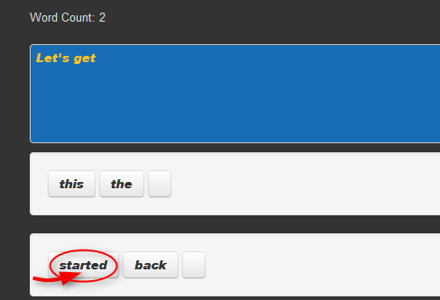
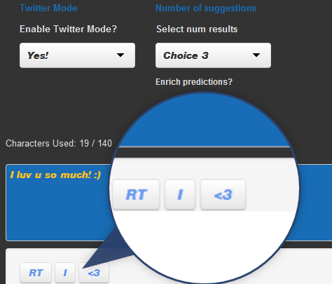
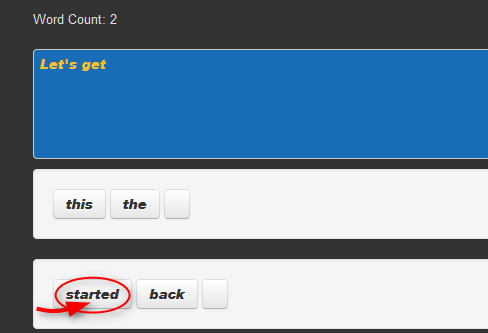
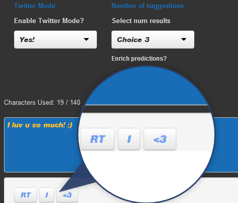

The App
Free to use and runs right in the browser, using Html5, Shiny and R.
- Just type
- Point
- Click!
| Word Predictions | User Options! | Twitter mode/tweet vocab |
|---|---|---|
|  |  |
 |
Grab it here: https://sepanda.shinyapps.io/ShinyWordPredictor/
Sepanda Pouryahya.
Free to use and runs right in the browser, using Html5, Shiny and R.
| Word Predictions | User Options! | Twitter mode/tweet vocab |
|---|---|---|
|  | |
 |
Grab it here: https://sepanda.shinyapps.io/ShinyWordPredictor/
theGpattern <- "[A-GJXa-gjx]#|([£\\$])?[0-9.]+|[a-zA-Z&_0-9]+('[stdm]|('ve)|('ll)|('re))?\\+*|[-\\.@!%\\*\\(\\)=\\{\\}\\|:;,><\\?/~`'#+£\\$\"]"
The user input is then processed, using a "Stupid backoff" or "Knesser-Ney" algorithm, picking out the highest and most relevant predictions based on preprocessed data from HC Corpora data sets.
Tweets get their own special word processing. Why? Punctuation in Tweets can often mean more than the words around them.
TweetText <- "NLP makes me :) I <3 it!"
Solution? Treat groups of punctuation, letters and numbers as words in their own right!
The training scheme involved 70% of the entire data set, the following is based on random sampling of the remaining 30% of the data.
The fitness test against random samples of the held out test data yielded the following (averaged) values.
| Testing | Alogrithm | Number of predicted words | success rate |
|---|---|---|---|
| Backoff | 1 | 14.7 % | |
| Backoff | 2 | 19.2 % | |
| Backoff | 3 | 23.2 % | |
| Blog/News | Backoff | 1 | 18.8 % |
| Backoff | 2 | 28.3 % | |
| Backoff | 3 | 34.1 % | |
| Blog/News | Kneser-Ney | 1 | 15 % |
| Kneser-Ney | 2 | 21.8 % | |
| Kneser-Ney | 3 | 27.5 % |
Instructions for using the app can be found within the app itself!
It's fun, it's free!
The app: https://sepanda.shinyapps.io/ShinyWordPredictor/
My github: https://github.com/sepanda
More about me: